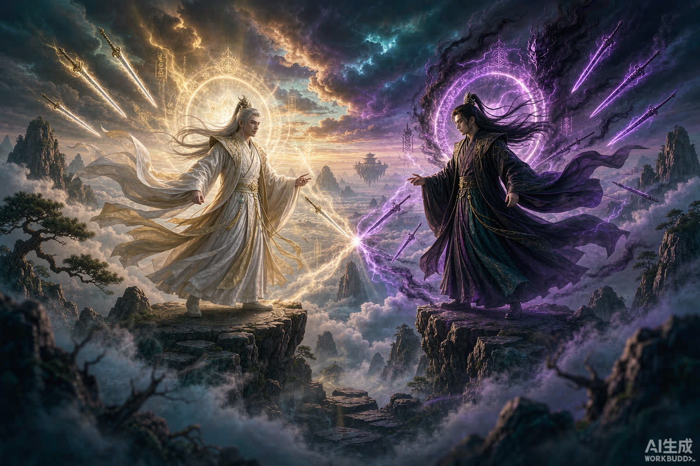
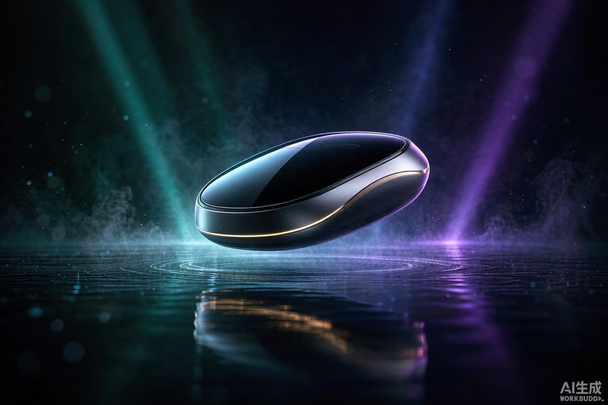
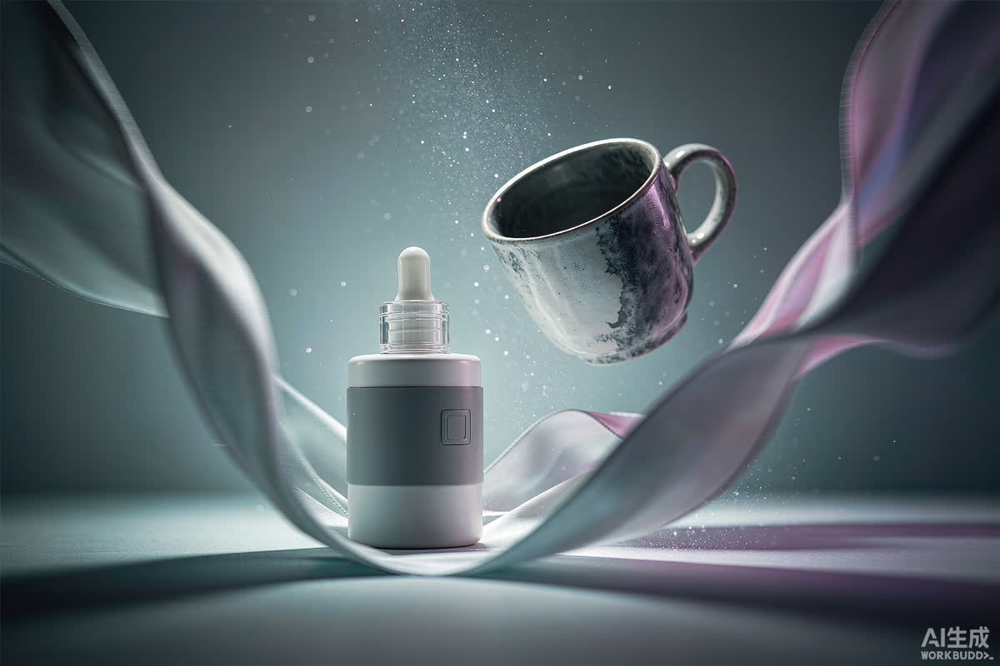
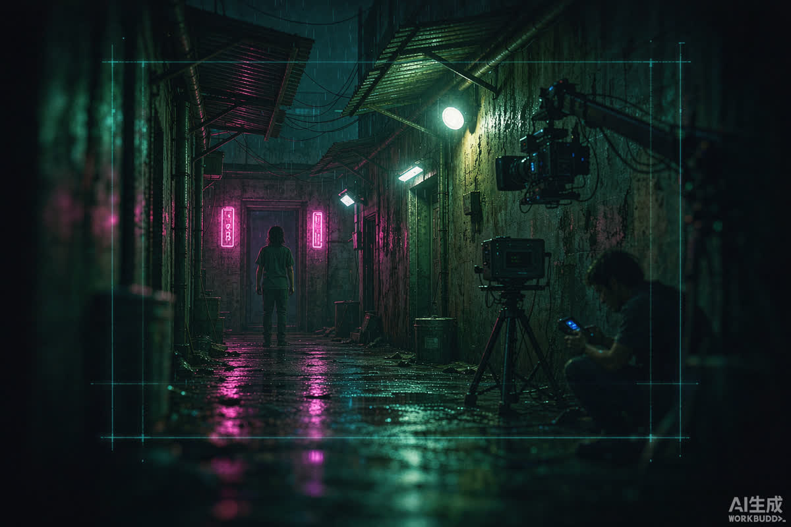
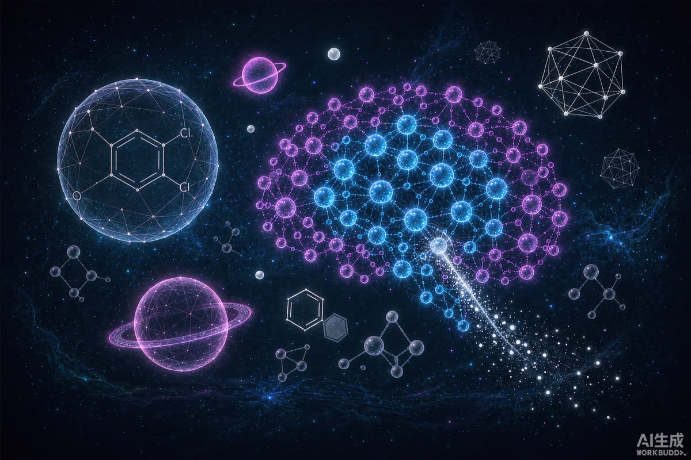

灵趣潜像（Latent Frame）取自摄影中的 latent image——底片曝光后已经存在、却尚未显影的影像。 生成也是如此：模型里早已存着关于光影、材质与运动的潜在表征，我们要做的是把它显影成连贯、可控、可交付的画面。
重点解决三件难事：长时序下主体身份与风格不漂移、运动本身的稳定性， 以及画面与配音／音乐的节拍对齐。
按「交付什么」划分的八类场景。每类对应不同的生成难点，也对应不同的功能组合——点击卡片下方的标签可看出差异。
面向文旅局与景区。地域符号（地标、园林、水系、四季植被）跨镜头连续呈现，航拍级运镜，配乐与画面节奏对齐。

面向影视公司与短剧平台。剧本自动切分镜，角色形象跨镜头锁定，对白配音与口型同步，支持连续剧情推进。

面向品牌方与代理公司。产品外观在多机位下保持一致，品牌色与调性可锁定，支持 15s／30s 多版本批量产出。

面向商家与电商平台。一张商品图即可延展为动态展示，自动叠加卖点字幕，一次生成适配竖屏／横屏／方屏。
面向企业、媒体与教育。形象与音色克隆后，文案一键转口播视频；支持多语种版本，适合高频更新的资讯类内容。

面向导演与制片。剧本直接转动态分镜，用于开机前验证镜头语言与节奏，把试错成本从实拍阶段前移到生成阶段。

面向教育机构与科普账号。把抽象概念（结构、机制、流程）可视化为易懂的动态示意图，并配讲解配音。
面向音乐人与厂牌。以音频驱动画面生成，视觉变化与节拍、情绪段落对齐，适合风格化、非叙事的表达。
以下两条由我们的生成管线直接产出，未做剪辑与后期处理，可完整观察长时序下的稳定性。为控制加载，视频已转码压缩。
说明：以上片段为真实生成结果，实际产出随模型版本、提示词与配置而变化。其余六类场景可按需求提供对应样例。
支撑上面八类场景的底层能力。场景是「交付什么」，功能是「靠什么做到」。
从需求到交付的五步。前三步决定上限，后两步决定能否真的用起来。